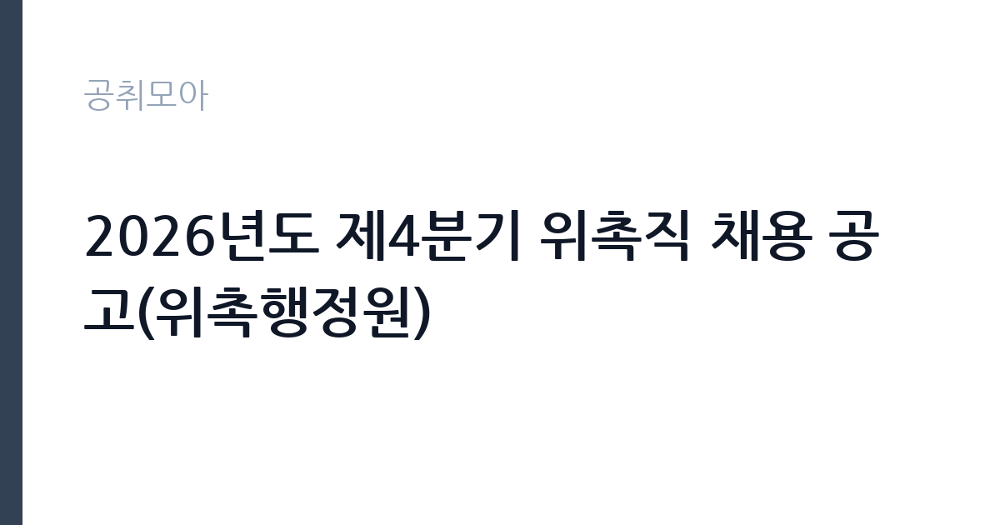

[공공기관] 2026년도 제4분기 위촉직 채용 공고(위촉행정원)
한국세라믹기술원 · 경기 · 마감 2026-10-29 (D-15) · 출처 잡알리오

한눈에 보는 모집 조건
| 기관 | 한국세라믹기술원 |
|---|---|
| 공고명 | 2026년도 제4분기 위촉직 채용 공고(위촉행정원) |
| 고용형태 | 기간제 |
| 근무지 | 경기 |
| 게시일 | 2026-10-15 |
| 마감일 | 2026-10-29 (D-15) |
지원자격, 이렇게 읽으세요
- 공공기관 채용공시
- 세부 조건은 원문 공고문 확인
지원자격은 기술원 인사규정 제7조의 결격사유에 해당하지 않고 임용 예정일에 즉시 근무가 가능한 자로, 연령 상한이 명시되어 있지 않습니다. 채용 분야별 자격과 가점 자격은 공고문에서 따로 정하므로 원문을 확인하시기 바랍니다. 행정원 트랙은 행정 실무 경력이나 OA 활용 능력, 관련 자격이 평가에 반영되는 경우가 많으니 경력기술서를 충실히 준비하시기 바랍니다. 계약직이므로 계약 기간과 갱신 조건도 원문에서 확인하시기 바랍니다.
이 공고의 포인트
이 공고의 포인트는 연령 제한 없이 지원할 수 있는 연구기관 행정 계약직이라는 점입니다. 위촉행정원은 과제 행정과 부서 사무를 전담해 공공기관 행정 경력을 쌓거나 이어가기에 좋습니다. 같은 시기 정규직 행정직 채용도 함께 열려 있어, 스펙이 된다면 정규직과 위촉직을 놓고 전략을 짤 수 있습니다. 근무지가 경기로 표기되어 있으니 거주나 통근 가능 여부를 먼저 따져보시기 바랍니다.
전형은 어떻게 진행되나
세부 전형 단계는 원문 공고문에서 확인하셔야 합니다. 위촉직 채용은 일반적으로 서류심사와 면접으로 진행되며, 경력직 성격이 강하면 경력기술서 평가 비중이 높습니다. 분야별 자격과 가점 자격을 원문에서 대조하고 증빙을 빠짐없이 준비하시기 바랍니다. 임용 예정일은 최종합격자 선발 후 협의합니다.
원문에서 확인한 전형 방식
- 기술원 「인사 규정」 제7조(결격사유)에 해당하지 않는 자 - 임용 예정일에 즉시 근무가 가능한 자(임용 예정일은 최종합격자 선발 후 협의할 예정) - 채용 분야별 자격과 가점 자격은 공고문 참고
이런 분께 추천해요
- 연구기관 행정 실무 경력을 살리고 싶은 구직자
- 연령 제한 없는 공공기관 계약직을 찾는 경력자와 중장년
- 경기 지역 연구거점 출근이 가능한 분
지원 전 체크리스트
- 계약 기간과 갱신 조건을 원문에서 확인했습니다
- 행정 실무 경력을 경력기술서로 정리했습니다
- 채용 분야별 자격과 가점 자격을 원문에서 대조했습니다
- 경기 근무지 출근 가능 여부를 확인했습니다
모집 일정과 제출 타이밍
마감은 10월 29일로 같은 기관 제4분기 채용과 동일합니다. 서류 접수 후 면접이 11월 초에 이어질 가능성이 크므로 해당 주 일정은 비워 두시기 바랍니다. 임용 예정일은 합격 후 협의이므로 기존 직장 퇴사 일정 등을 조정할 여유가 있습니다. 결과 발표는 채용 홈페이지를 통해 공지되는 경우가 많으니 수시로 확인하시기 바랍니다.
직무 이해하기: 공공기관
위촉행정원은 연구과제 행정과 부서 사무, 문서와 예산 집행 보조, 회의와 행사 준비 등을 맡습니다. 연구기관 행정은 과제비 집행과 정산, 시험분석 접수 관리 등 연구지원 특화 업무가 포함되어 일반 행정과 차별화됩니다. OA 활용과 문서 작성 기본기는 물론, 규정과 절차를 따르는 정확성이 중요합니다.
자기소개서 작성 팁
위촉행정원 자기소개서는 행정 실무 경력을 구체적으로 쓰는 것이 핵심입니다. 다뤄본 예산 규모나 문서 종류, 협업 부서, 개선 사례를 숫자와 함께 적으면 설득력이 높아집니다. 연구기관 행정에 관심을 가진 이유와 계약 기간 동안의 기여 계획을 밝히시기 바랍니다. 가점 자격이 있다면 증빙과 함께 명확히 기재하시기 바랍니다.
면접 준비 포인트
면접에서는 행정 실무 능력과 조직 적응력, 계약직 근무 의지를 묻는 경우가 많습니다. 실수나 민원 발생 시 대처 경험을 묻는 질문에 사례 중심으로 답하시기 바랍니다. 연구지원 행정의 특성을 이해하고 있다는 점을 보여주면 좋은 인상을 줄 수 있습니다. 계약 기간과 근무 조건에 대한 이해도 명확히 답하시기 바랍니다.
급여·근무조건 읽는 법
이 공고문에는 위촉직 보수 금액이 명시되어 있지 않으므로, 정확한 보수는 원문 공고문에서 확인하셔야 합니다. 공공기관 위촉직 보수는 통상 월 보수제로 운영되며 경력에 따라 차등 책정되는 경우가 많습니다. 참고로 세라믹기술원 정규직의 대졸 초임은 약 3,183만원 수준으로 알려져 있으나(잡코리아 기업정보 기준, 공식 공시 아님), 위촉직 보수와는 별개이므로 혼동하지 마시기 바랍니다. 실수령액은 세전 보수에서 4대보험 본인부담금과 소득세를 제외한 금액이 됩니다.
자주 묻는 질문
- 연령 제한이 있나요?
원문 발췌상 연령 상한은 명시되어 있지 않으며, 결격사유 미해당과 즉시 근무 가능이 요건입니다. 분야별 자격은 원문에서 확인하시기 바랍니다. - 인턴과 무엇이 다른가요?
위촉직은 계약직으로 실무를 전담하고 연령 제한이 없으며, 체험형 인턴은 만 34세 이하 청년의 실무 체험 자리입니다. - 어디서 접수하나요?
한국세라믹기술원 채용 홈페이지(kicet.recruiter.co.kr)에서 접수하며 마감은 10월 29일입니다.
함께 보면 좋은 공고
[공공기관] 2026년 한국도로공사 교통량 조사 기간제 근로자(사무원) 채용공고 — 마감 2026-10-28[공공기관] 2026년도 제4분기 체험형 인턴 채용 공고(장애인 채용) — 마감 2026-10-29[공공기관] 2026년도 제4분기 체험형 인턴 채용 공고(인턴사무원) — 마감 2026-10-29출처: 잡알리오 공개정보를 바탕으로 공취모아가 정리한 안내글입니다. 모집 조건·일정은 변경될 수 있으니 지원 전 반드시 원문 공고문을 확인하세요. 본 글은 정보 제공용이며 합격을 보장하지 않습니다.